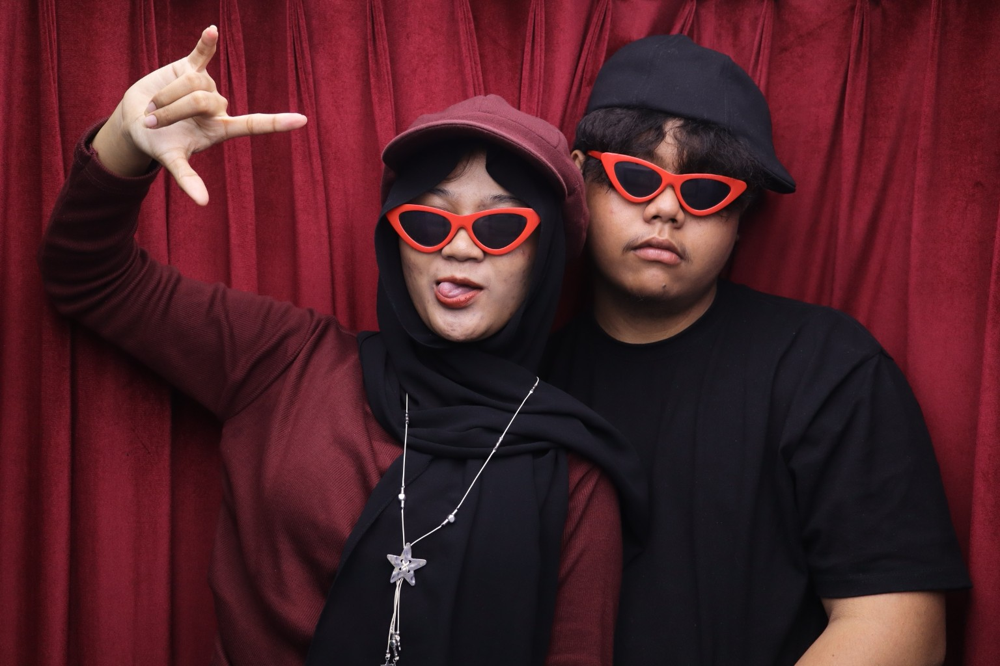
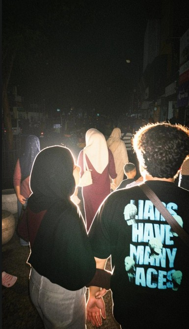
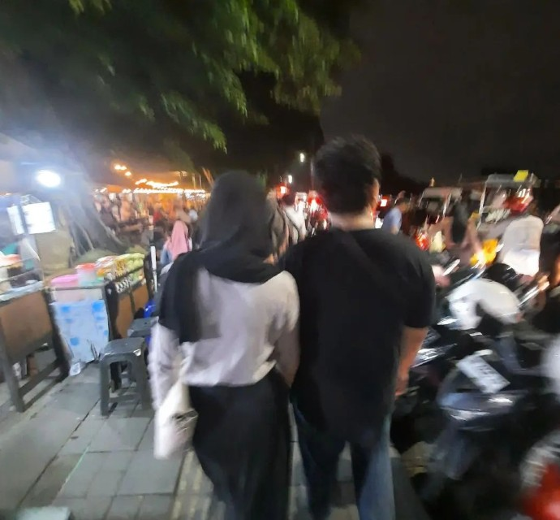

dari Bocil Nyenyenye 😾
Tempat sederhana yang menyimpan beberapa kenangan yang pernah membuatku tersenyum.
Semua bermula dari percakapan kecil yang tanpa sadar menjadi kebiasaan.
Aku masih ingat bagaimana kamu menungguku menerima paket itu.
Berjalan berdampingan tanpa tujuan yang jelas ternyata cukup membuat malam terasa lebih hangat.
Mungkin tidak sempurna, tapi selalu berhasil membuatku tertawa.



Terima kasih sudah pernah hadir dan mengisi sebagian cerita yang mungkin tidak akan terulang lagi. Ada banyak hal yang berubah, tapi beberapa kenangan tetap tinggal. Dan museum kecil ini, akan selalu menyimpan bagian itu.